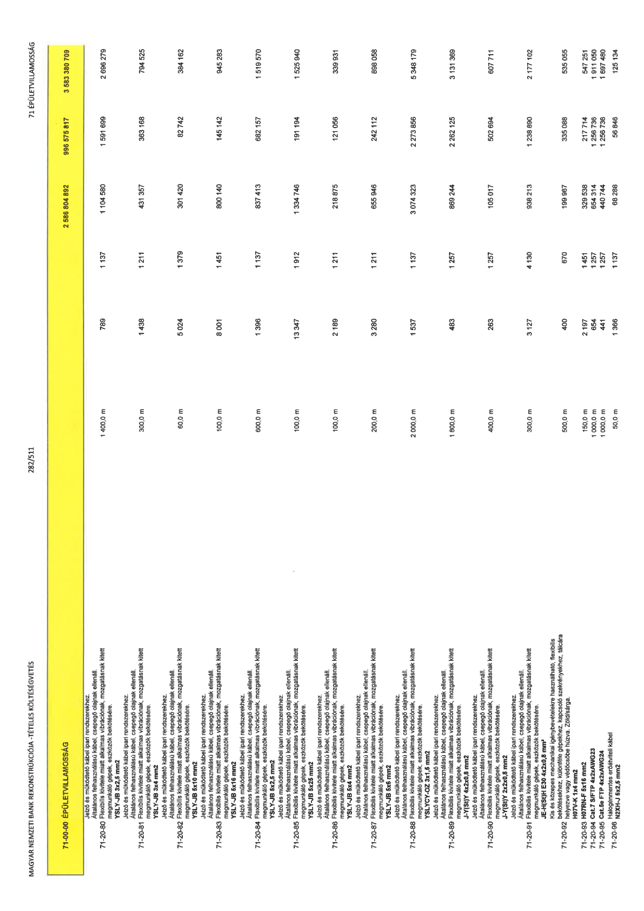

| Tétel | Menny. | Egys. | Anyag e.ár (net HUF) | Díj e.ár (net HUF) | Anyag összesen (net HUF) | Díj összesen (net HUF) | Anyag+Díj összesen (net HUF) |
|---|---|---|---|---|---|---|---|
| 71-00-00 ÉPÜLETVILLAMOSSÁG | NaN | NaN | 0 | 0 | 2 586 804 892 | 996 575 817 | 3 583 380 709 |
| Jelző és működtető kábel ipari rendszerekhez. Általános felhasználású kábel, csepegő olajnak ellenáll. Flexibilis kivitele miatt alkalmas vibrációnak, mozgatásnak kitett megmunkáló gépek, eszközök bekötésére. YSLY-JB 3x2,5 mm2 | 0 | 0 | 0 | 0 | 0 | 0 | 0 |
| 71-20-80 | 1 400,0 | m | 789 | 1 137 | 1 104 580 | 1 591 699 | 2 696 279 |
| Jelző és működtető kábel ipari rendszerekhez. Általános felhasználású kábel, csepegő olajnak ellenáll. Flexibilis kivitele miatt alkalmas vibrációnak, mozgatásnak kitett megmunkáló gépek, eszközök bekötésére. YSLY-JB 3x4 mm2 | 0 | 0 | 0 | 0 | 0 | 0 | 0 |
| 71-20-81 | 300,0 | m | 1 438 | 1 211 | 431 357 | 363 168 | 794 525 |
| Jelző és működtető kábel ipari rendszerekhez. Általános felhasználású kábel, csepegő olajnak ellenáll. Flexibilis kivitele miatt alkalmas vibrációnak, mozgatásnak kitett megmunkáló gépek, eszközök bekötésére. YSLY-JB 5x10 mm2 | 0 | 0 | 0 | 0 | 0 | 0 | 0 |
| 71-20-82 | 60,0 | m | 5 024 | 1 379 | 301 420 | 82 742 | 384 162 |
| Jelző és működtető kábel ipari rendszerekhez. Általános felhasználású kábel, csepegő olajnak ellenáll. Flexibilis kivitele miatt alkalmas vibrációnak, mozgatásnak kitett megmunkáló gépek, eszközök bekötésére. YSLY-JB 5x16 mm2 | 0 | 0 | 0 | 0 | 0 | 0 | 0 |
| 71-20-83 | 100,0 | m | 8 001 | 1 451 | 800 140 | 145 142 | 945 283 |
| Jelző és működtető kábel ipari rendszerekhez. Általános felhasználású kábel, csepegő olajnak ellenáll. Flexibilis kivitele miatt alkalmas vibrációnak, mozgatásnak kitett megmunkáló gépek, eszközök bekötésére. YSLY-JB 5x2,5 mm2 | 0 | 0 | 0 | 0 | 0 | 0 | 0 |
| 71-20-84 | 600,0 | m | 1 396 | 1 137 | 837 413 | 682 157 | 1 519 570 |
| Jelző és működtető kábel ipari rendszerekhez. Általános felhasználású kábel, csepegő olajnak ellenáll. Flexibilis kivitele miatt alkalmas vibrációnak, mozgatásnak kitett megmunkáló gépek, eszközök bekötésére. YSLY-JB 5x25 mm2 | 0 | 0 | 0 | 0 | 0 | 0 | 0 |
| 71-20-85 | 100,0 | m | 13 347 | 1 912 | 1 334 746 | 191 194 | 1 525 940 |
| Jelző és működtető kábel ipari rendszerekhez. Általános felhasználású kábel, csepegő olajnak ellenáll. Flexibilis kivitele miatt alkalmas vibrációnak, mozgatásnak kitett megmunkáló gépek, eszközök bekötésére. YSLY-JB 5x4 mm2 | 0 | 0 | 0 | 0 | 0 | 0 | 0 |
| 71-20-86 | 100,0 | m | 2 189 | 1 211 | 218 875 | 121 056 | 339 931 |
| Jelző és működtető kábel ipari rendszerekhez. Általános felhasználású kábel, csepegő olajnak ellenáll. Flexibilis kivitele miatt alkalmas vibrációnak, mozgatásnak kitett megmunkáló gépek, eszközök bekötésére. YSLY-JB 5x6 mm2 | 0 | 0 | 0 | 0 | 0 | 0 | 0 |
| 71-20-87 | 200,0 | m | 3 280 | 1 211 | 655 946 | 242 112 | 898 058 |
| Jelző és működtető kábel ipari rendszerekhez. Általános felhasználású kábel, csepegő olajnak ellenáll. Flexibilis kivitele miatt alkalmas vibrációnak, mozgatásnak kitett megmunkáló gépek, eszközök bekötésére. YSLYCY-OZ 3x1,5 mm2 | 0 | 0 | 0 | 0 | 0 | 0 | 0 |
| 71-20-88 | 2 000,0 | m | 1 537 | 1 137 | 3 074 323 | 2 273 856 | 5 348 179 |
| Jelző és működtető kábel ipari rendszerekhez. Általános felhasználású kábel, csepegő olajnak ellenáll. Flexibilis kivitele miatt alkalmas vibrációnak, mozgatásnak kitett megmunkáló gépek, eszközök bekötésére. J-Y(St)Y 4x2x0,8 mm2 | 0 | 0 | 0 | 0 | 0 | 0 | 0 |
| 71-20-89 | 1 800,0 | m | 483 | 1 257 | 869 244 | 2 262 125 | 3 131 369 |
| Jelző és működtető kábel ipari rendszerekhez. Általános felhasználású kábel, csepegő olajnak ellenáll. Flexibilis kivitele miatt alkalmas vibrációnak, mozgatásnak kitett megmunkáló gépek, eszközök bekötésére. J-Y(St)Y 2x2x0,8 mm2 | 0 | 0 | 0 | 0 | 0 | 0 | 0 |
| 71-20-90 | 400,0 | m | 263 | 1 257 | 105 017 | 502 694 | 607 711 |
| Jelző és működtető kábel ipari rendszerekhez. Általános felhasználású kábel, csepegő olajnak ellenáll. Flexibilis kivitele miatt alkalmas vibrációnak, mozgatásnak kitett megmunkáló gépek, eszközök bekötésére. JE-H(St)H E30 4x2x0,8 mm² | 0 | 0 | 0 | 0 | 0 | 0 | 0 |
| 71-20-91 | 300,0 | m | 3 127 | 4 130 | 938 213 | 1 238 890 | 2 177 102 |
| Kis és közepes mechanikai igénybevételekre használható, flexibilis bekötésekhez, különféle gépekhez, kapcsoló szekrényekhez, tálcára helyezve vagy védőcsőbe húzva. Zöld/sárga. H07V-K 1x4 mm2 | 0 | 0 | 0 | 0 | 0 | 0 | 0 |
| 71-20-92 | 500,0 | m | 400 | 670 | 199 967 | 335 088 | 535 055 |
| 71-20-93 H07RN-F 5x16 mm2 | 150,0 | m | 2 197 | 1 451 | 329 538 | 217 714 | 547 251 |
| 71-20-94 Cat.7 S/FTP 4x2xAWG23 | 1 000,0 | m | 654 | 1 257 | 654 314 | 1 256 736 | 1 911 050 |
| 71-20-95 Cat.5e FTP 4x2xAWG24 | 1 000,0 | m | 441 | 1 257 | 440 744 | 1 256 736 | 1 697 480 |
| Halogénmentes erőátviteli kábel | 0 | 0 | 0 | 0 | 0 | 0 | 0 |
| 71-20-96 N2XH-J 5x2,5 mm2 | 50,0 | m | 1 366 | 1 137 | 68 288 | 56 846 | 125 134 |
